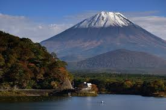
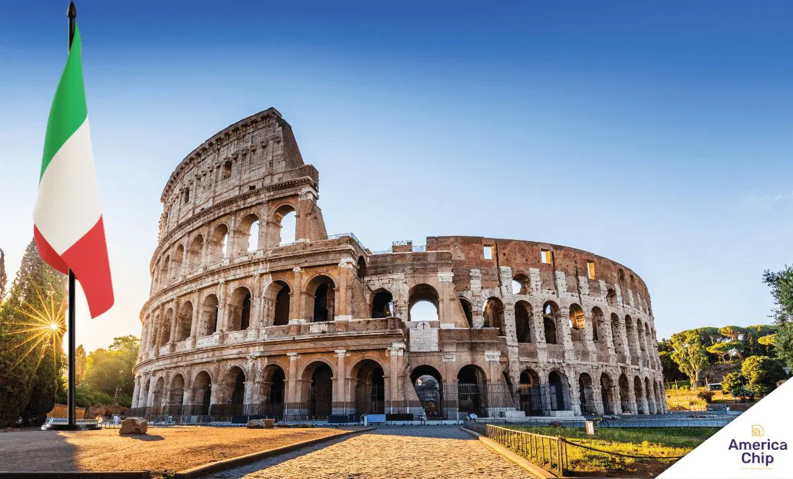
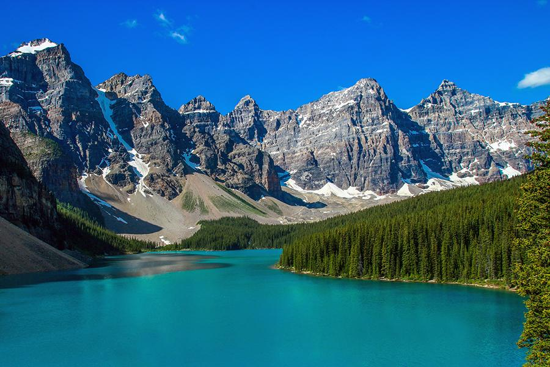

Sou uma pessoa curiosa e gosto muito de aprender coisas novas, principalmente sobre tecnologia. Também gosto de estudar japonês e explorar ideias criativas.
Nome: Isabella Gimenes Dos Santos
Turma: 2º Ano I - Germinare TECH
Lugares que tenho vontade de conhecer




Tenho vontade de conhecer esses lugares porque cada um deles possui algo único. Alguns têm uma cultura muito diferente da nossa, outros possuem paisagens naturais impressionantes ou uma história muito importante para o mundo.
O lugar dos meus sonhos
Nome do lugar: Japão
Por que quero conhecer esse lugar?
O Japão é um país que me chama muita atenção por causa da cultura, da tecnologia e da organização das cidades. Também tenho interesse na língua japonesa e gostaria muito de conhecer lugares tradicionais, templos e paisagens naturais. Além disso, o país mistura tradição e inovação de uma forma muito interessante.
Curiosidades sobre esse lugar
- O Japão possui uma das tecnologias mais avançadas do mundo.
- Existem mais de 6.000 ilhas no território japonês.
- A cultura japonesa valoriza muito disciplina, respeito e tradição.
Por que a Velma?
- Ela é muito inteligente e curiosa.
- Gosta de resolver mistérios e analisar as coisas com lógica.
- Representa bem o gosto por aprender e investigar.